Build Poker Hands
Turn five dice into pairs, straights, full houses, five-of-a-kind, and more.

Rig the dice. Stack powerful relics. Build impossible poker hands. Beat the house.
Dice After Dark is a neon dice roguelike where players build five-dice poker hands and battle the casino's deadliest opponents.
Roll, hold, and reroll five dice to form poker-style hands. Every hand turns CHIPS × MULT into damage, while relics, seals, hand upgrades, and rigged dice reshape the odds from run to run.
Choose a character, develop a build, survive increasingly dangerous tables, and break the house before it breaks you.
Turn five dice into pairs, straights, full houses, five-of-a-kind, and more.
Modify dice, stack seals, and push probability toward the build you want.
Combine scoring, economy, survival, and multiplicative effects into explosive runs.
Battle distinct casino opponents, high-stakes encounters, and dangerous events.
Click any image to open the original file.
Realmono Studio is an independent, Korea-based game studio focused on compact, system-driven games with strong replayability and distinctive atmosphere.
Dice After Dark is built as a fast, highly replayable dice roguelike centered on manipulating odds, discovering synergies, and pushing risky builds as far as they can go.
For press, creators, review keys, and business inquiries:
realmonostudio@gmail.comAll downloadable assets on this page may be used for editorial coverage of Dice After Dark.
{kind=link}
{kind=link}
{kind=link}
{kind=link}
{kind=link}
{kind=link}
{kind=link}
{kind=link}